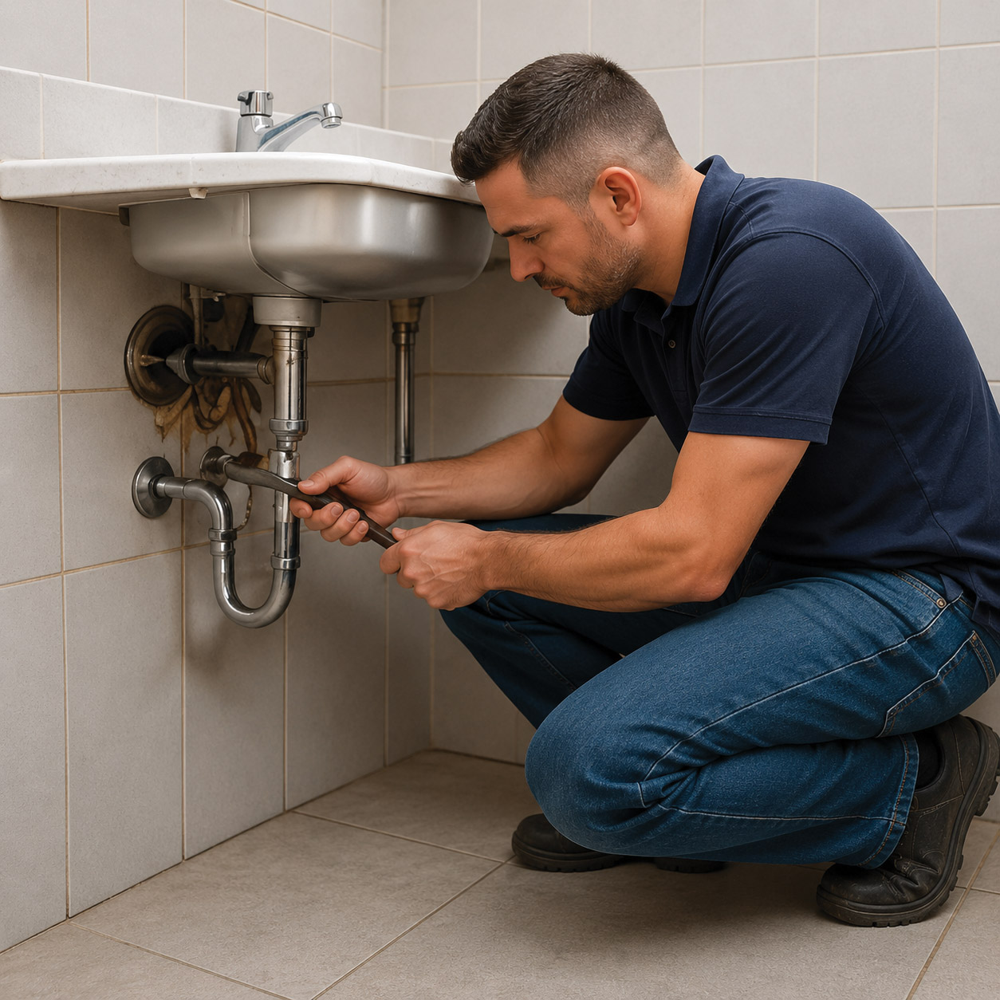

Services: Domestic
Domestic Building Services
Practical support for maintenance, repairs, renovations, extensions, property improvements and project management and coordination.
Domestic building services
AssetTFM works with homeowners across a broad range of building needs, including project management and coordination services. Some jobs begin with a repair or maintenance issue. Others involve planned improvements, renovations or larger project works.
We can coordinate the trades and project requirements needed to move the work forward, giving you a clear point of contact throughout the process.
What we can help with
Our trade services can support one-off works, ongoing maintenance and larger projects. Services include, but are not limited to:
- General building maintenance
- Repairs and improvement works
- Renovations
- Extensions
- Carpentry
- Electrical and plumbing coordination
- Painting and plastering
- Tiling and glazing
- Flooring
- Cabinetry and furniture works
- Landscaping and irrigation
- Concrete and resurfacing
- Window furnishings and blinds
- Demolition works where required
Project management and coordination
For larger domestic works, AssetTFM provides project management and coordination services and can assist with:
- Consultation
- Design and plan coordination
- Building permit coordination
- Contractor management
- Trade coordination
- Compliance certification coordination
- Site supervision
- Project handover
Need help with your property?
Use Service Enquiry for maintenance, repairs and smaller works, or Project Enquiry for renovations, extensions and larger planned projects.